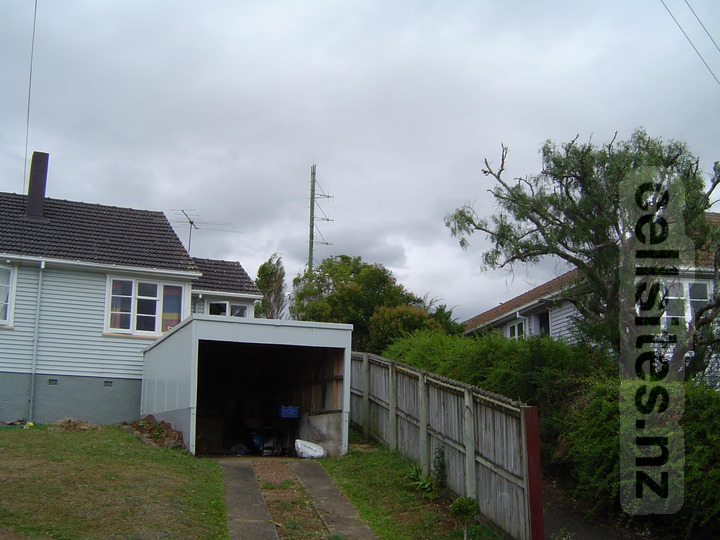
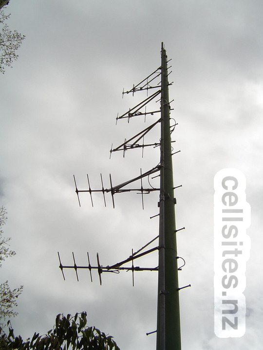

One of a number of low-power VHF television relay stations built to fill in coverage gaps from the main VHF television transmission stations. This seems to have been built to provide improved reception to households on and around nearby Ngapuhi Road (which this site seems to be named after). This relay was operated by BCL, which has since been renamed to Kordia. 12 March 2005.

A close-up shot showing the VHF Band III antennas. The bottom two are horizonally polarised while the top three are vertically polarised. Given the main station, Waiatarua, is horizonally polarised it is clear that the bottom two are the receive antennas. Given that the receive is Band III only it suggests this relay was built for improved reception of either or both TV2 and TV3, both of which was then broadcast on VHF Band III. Either or both channels would have been re-broadcast also on Band III, allowing households to have a Band I antenna pointed at Waiatarua for reception of TV1 and a separate Band III antenna pointed at this relay for reception of TV2 and/or TV3. However I don't recall seeing many households making use of this relay! 12 March 2005.